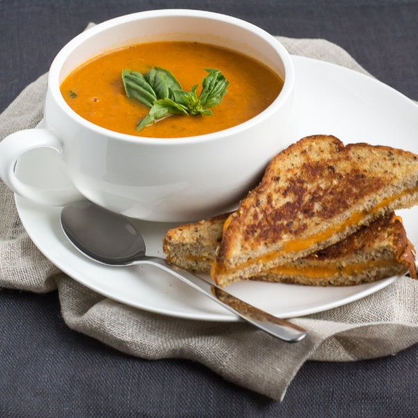

Tomato-Basil Soup with Cheddar Grilled Cheese

Nutrition (per serving)
548.3 kcalCalories
21.3 gProtein
48.5 gCarbs
32.1 gFat
Full nutrition table
| Calories | 548.3 kcal |
| Total fat | 32.1 g |
| Saturated fat | 14.7 g |
| Trans fat | 0.9 g |
| Cholesterol | 59.9 mg |
| Sodium | 579.3 mg |
| Carbohydrates | 48.5 g |
| Fiber | 11.1 g |
| Sugars | 14.4 g |
| Protein | 21.3 g |
| Potassium | 1201.3 mg |
| Calcium | 426.4 mg |
| Iron | 3.9 mg |
| Vitamin A | 2311.8 IU |
| Vitamin C | 49.4 mg |
| Vitamin D | 15.5 IU |
Cookware
Ingredients
- 2 mediumcarrots
- 2 stickscelery
- ½ (8 oz) blockcheddar cheese
- 16 fl ozchicken or vegetable broth
- 2 (14.5 oz) cansdiced tomatoes
- 1 small pkgfresh basil
- 4 clovesgarlic
- 4tomatoes
- 8 sliceswhole grain bread
- 1 mediumyellow onion
- black pepper
- butter, unsalted
- extra virgin olive oil
- salt
Steps
- Remove butter from fridge and allow to soften in the microwave or on the counter.4 tbsp butter, unsalted
- Heat a medium saucepan over medium heat.
- Peel and small dice onion. Peel and mince garlic.1 medium yellow onion
4 cloves garlic - Coat bottom of saucepan with oil. Add onion and garlic; begin cooking while you chop the carrot and celery.2 tbsp extra virgin olive oil
- Wash and thinly slice carrots and celery; add to saucepan. Stirring occasionally, cook until carrots and celery have softened, 6-7 minutes.2 medium carrots
2 sticks celery - Wash and medium dice tomatoes.4 tomatoes
- Wash basil. Pick leaves off the stems; discard the stems and thinly slice the leaves into ribbons.1 small pkg fresh basil
- Add fresh and canned tomatoes, broth, salt, and pepper to saucepan. Stir and bring to a boil. Reduce heat, cover, and simmer for about 10 minutes.2 (14.5 oz) cans diced tomatoes
16 fl oz (2 cups) chicken or vegetable broth
1 tsp salt
¼ tsp black pepper - Heat a skillet over medium-low heat.
- Grate 1 cup of cheddar.½ (8 oz) block cheddar cheese
- Spread butter onto 1 side of each bread slice and place buttered-side down on a flat surface.8 slices whole grain bread
- Divide cheddar between 4 of the bread slices and top with the other slices. Place in the skillet and gently press down with a spatula. Cook until cheese is melted and bread is golden brown, 2-4 minutes per side.
- Add basil to the soup and stir. Purée soup until smooth using a hand or regular blender.
- Pour soup into a bowl and service with grilled cheese on the side. Enjoy!